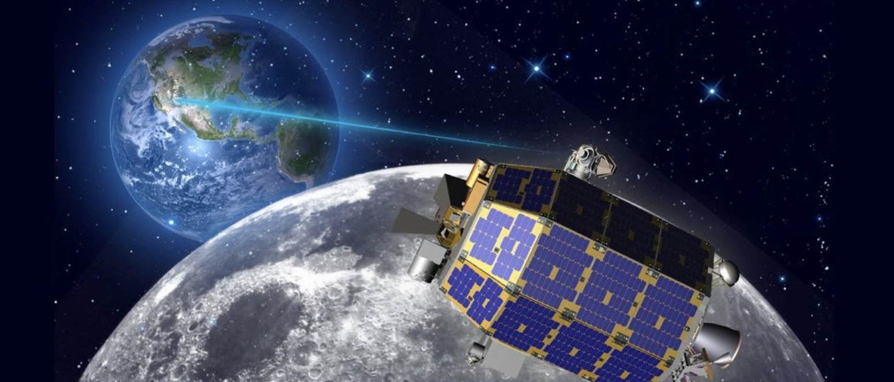

Lunar communications network established
With decreases in launch costs, pursuits to build out the cis-lunar economy increases [ref fuel depot node and lunar base node] along with demand for high-quality, uninterrupted communication between the Earth and the Moon. To meet this demand, lunar telecommunication satellites are planned for installation in 2022. Constellation build out, completed over time, will include technology that enables high bandwidth for large data rate transmission and services such as 4K, ultra-high-definition video.
Artist rendition of the successful 2013 Lunar Laser Communications Demonstration (LLCD). 622 Mbps of data downlink was demonstrated using optical communication technology that uses less power than heavier, bigger radio frequency systems. Image courtesy of NASA.